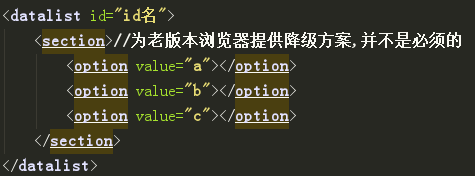

1.placeholder属性：
添加占位符
2.required属性
表单必填项
3.autofocus属性:
让表单在加载完成时就有一个表单域被默认聚焦（或选中）,不要聚焦一个以上的表单域!不然会出现跨浏览器混乱, 而且这个属性会阻止空格的默认行为（让网页内容向下滚动），敲击空格会向已聚焦的输入框中输入空格
4.list属性
list属性以及对应的datalist元素可以让用户在输入框中开始输入值的时候，显示一组备选值 使用方法：在表单元素中加上属性list="id名"
5.input：focus：valid：
input：focus：valid：选择当前聚焦的且含有合法输入值的表单域
input：focus：invalid：选择当前聚焦的且含有非法输入值的表单域